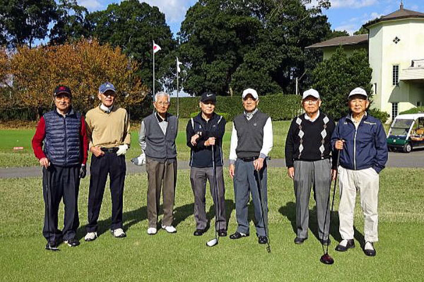
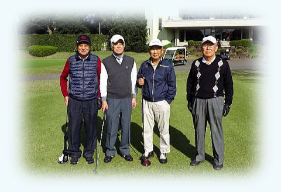
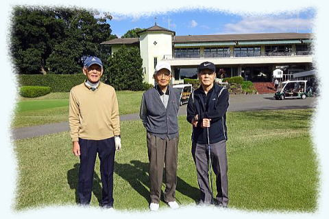
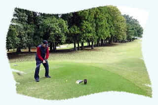
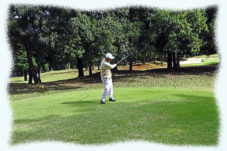
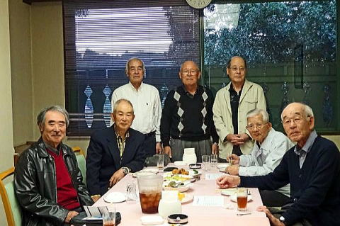
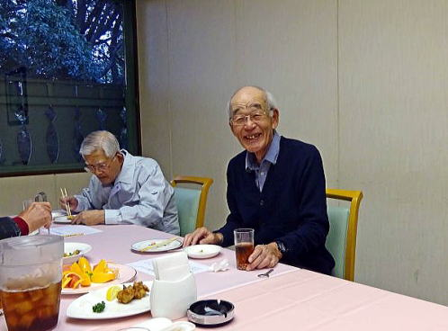
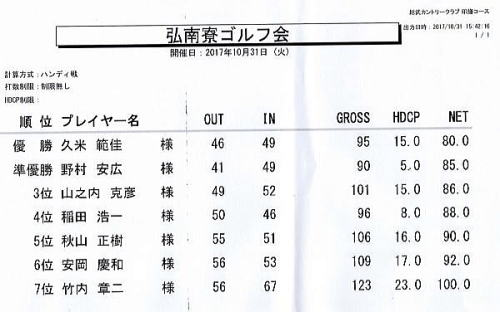

| 横浜国立大学工学部第四寮 |
| |
| 第１９回弘南寮ゴルフ大会 |
時： 平成29年10月31日（火）
所： 千葉県総武カントリー印旛コース
今年は異常気象で、このところ、2週続けて土日が台風に見舞われましたが、
当日は秋晴れ、無風の絶好のゴルフ日和でした。
|  |
参加者総員 左から ３９年機械 竹内章二 ３８年造船 久米範佳 ３４年機械 山之内克彦 ４０年機械 安岡慶和 ３７年建築 野村安広 ３８年電工 稲田浩一 ３８年建築 秋山正樹 |
|  |  |
| 第１組 竹内さん 野村さん 秋山さん 稲田さん | 第２組 久米さん 山之内さん 安岡さん |
模範演技あれこれ
|  |  |
懇親会
|  |  |
| 久米さんの優勝の弁 |

次回は 平成30年5月22日（火）と決定いたしました。
多くの方の参加を期待しております。
以上/稲田浩一